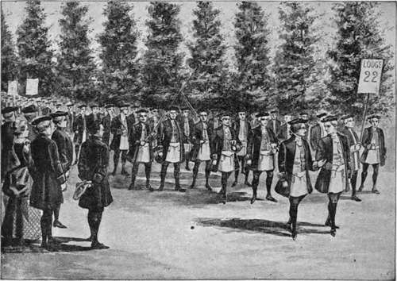

Original Corner-Stone
Description
This section is from the book "The National Capitol. Its Architecture Art And History", by George C. Hazelton, Jr. Also available from Amazon: The National Capitol Its Architecture Art and History.
Original Corner-Stone
The 18th of September, 1793, should be ever memorable in American history. On that eventful day, George Washington, surrounded by those he loved, descended into the cavazion at the southeast corner of the proposed north or Senate wing, and firmly set with Masonic rites the corner-stone of the National Capitol. The day was beautiful. The sight of the little group of patriots gathered about that spot, offering prayers for the prosperity of the people and for the kindred growth of the Capitol and the nation, and all filled with reverence and love for the tall, majestic, soldier-President, now silver-crowned by years, who had guided many of those present and the brothers and fathers of others, gone forever, through the dark days of the Revolution, must have been one of tender impressiveness then, as it is in reflective glimpses now. The Masonic apron worn by the President was the handiwork of Madame de Lafayette, the wife of that beloved French general whose heroism had helped to make possible this peaceful and propitious scene.
The following account of the ceremonies on this august occasion is taken from the columns of the Columbian Centinel, published in Boston, October 5, 1793, and is, no doubt, a fairly accurate description, as it was written presumably by an eye-witness.
By Thursdav Night's Mails, maryland.
Georgetown, Sept. 21.
On Wednesday last one of the grandest Masonic processions took place, which, perhaps, ever was exhibited on the like important occasion.
About ten o'clock, Lodge No. 9, were visited by that congregation, so grateful to the craft, Lodge, No. 22, of Virginia, with all their officers and regalia, and directly afterwards appeared on the southern banks of the grand river Potowmack, one of the finest companies of volunteer artillery that hath been lately seen, parading to receive the President of the United States, who shortly came in sight with his suite—to whom the artillery paid their military honors, and his Excellency and suite crossed the Potowmack, and was received in Maryland by the officers and brethren of No. 22, Virginia, and No. 9, Maryland ; whom the President headed, and preceded by a band of music, the rear brought up by the Alexandria volunteer artillery, with grand solemnity of march, proceeded to the President's square, in the city of Washington, where they were met and saluted by No. 15, of the city of Washington, in all their elegant regalia, headed by brother Joseph Clark, Rt. W.G. M.P.T. and conducted to a large Lodge prepared for the purpose of their reception. After a short space of time, by the vigilance of brother C. Worthy Stephenson, grand marshal, P.T. the brotherhood and other bodies were disposed in a second order of procession, which took place amidst a brilliant crowd of spectators of both sexes, according to the following arrangements, viz.:
The Surveying department of the city of Washington, Mayor and Corporation of Georgetown, Virginia artillery, Commissioners of the City of Washington, and their attendants. Stone cutters. Mechanics, Two Sword Bearers, Masons of the Fifth degree, Bibles, etc., on Grand Cushions, Deacons with Staffs of Office, Stewards with Wands, Masons of the Third Degree, Wardens with Truncheons, Secretaries with Tools of Office, Pay-Masters with their Regalia, Treasurers with their Jewels, Band of Music, Lodge No. 22, of Virginia, disposed in their own order, Corn, Wine, and Oil, Grand Master, Pro Tern., Brother George Washington, W. M., No. 22, Virginia, Grand sword-bearer.
The procession marched two a-breast, in the greatest solemn dignity, with music playing, drums beating, colours flying, and spectators rejoicing ; from the President's square to the capitol, in the city of Washington : where the grand marshal ordered a halt, and directed each file in the procession to incline two steps, one to the right, and one to the left, and face each other, which formed an hollow oblong square ; through which the grand sword bearer led the van ; followed by the- grand master P. T. on the left—the President of the United States in the center, and the Worshipful master of No. 22, Virginia, on the right— all the other orders, that composed the procession advanced, in the reverse of their order of march from the President's square, to the South East corner of the capitol: And the artillery Hied off to a destined ground to display their manceuvers and discharge their cannon : The President of the United States, the Grand Master, P. T. and Worshipful M. of No. 22, taking their stand to East of an huge stone ; and all the craft, forming a circle Westward, stood a short time in silent ^wful order ;
The Artillery discharged a volley.
The Grand Master delivered the Commissioners, a large silver plate with an inscription thereon, which *he Commissioners ordered to be read, and was as follows :—
This southeast comer stone of the Capitol of the United States of America, in the city of Washington was laid on the 18th., day of September, 1793, in the eighteenth year of American Independence, in the first year of the second term of the Presidency of George V» ashington, whose virtues in the civil administration of his country have been as conspicious and beneficial as his military valor and prudence have been useful in establishing her liberties, and in the year of Masonry 5793, by the President of the United States, in concert with the Grand Lodge of Maryland, several lodges under its jurisdiction, and Lodge No. 22, from Alexandria, Va.; Thomas F. Johnson, David Steuart, and Daniel Carrol, Commissioners; Joseph Clark, Right Worshipful Grand Master, pro tempore; James Hoban and Stephen Hallette, architects ; Collin Williamson, master mason.
Masonic procession, september 18, 1793.
The artillery discharged a volley.
The plate was then delivered to the President, who, attended by the grand master P.T. —and three most worshipful masters descended into the cavasson trench, and deposed the plate, and laid on it the cornerstone of the Capitol of the United States of America—on which was deposed corn, wine, and oil ; when the whole congregation joined in awful prayer, which was succeeded by Masonic chaunting honours and a volley from the artillery.
The President of the United States and his attendant brethren ascended from the cavasson to the East of the corner stone, and there the grand master P.T. elevated on a triple rostrum, delivered an animated and ingenious Oration.*
The whole company retired to an extensive booth, where an ox of 500 lbs.'was bar-bacued, of which the company generally partook, with every abundance of other recreation. The festival concluded with fifteen successive vollies from the artillery, whose military discipline and manceuvers, merit every commendation.
* This oration, pronounced by Brother Joseph Clarke, Rt. Worshipful Grand-Master P.T., may be found in the Columbian Centinel of Wednesday, October 9, 1793.
Continue to: